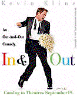
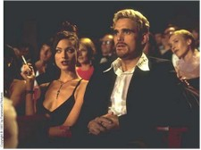
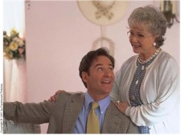

Contents | Features | Reviews | News | Archives | Store |
 |
|
| Movie Credits | Buy It! |
In & Out
Review by Eddie Cockrell
Posted 19 September 1997
|  | Directed by Frank Oz Starring Kevin Kline, Joan Cusack, Screenplay by Paul Rudnick |
An incisive if somewhat awkward mix of contemporary social satire and neatly inverted elements of classic Hollywood screwball comedy, In & Out scores some legitimate and very funny points for sexual tolerance and against the suffocating intimacy of an admittedly idealized small-town America, but in the end lacks the shrewd insight – not to mention the plausibility – of its convictions and is saddled with a clunky rhythm that prevents it from becoming as laugh-out-loud funny as it fancies itself to be.
Prominent among the outstanding citizens who call the bucolic hamlet of Greenleaf, Indiana ("A Great BIG Small Town") home is Howard Brackett (Kevin Kline), an English teacher and football coach at the local high school. For three years Howard's been engaged to fellow teacher Emily Montgomery (Joan Cusack), and with the wedding only a few days away they settle down in front of the TV to watch as one of Howard's former students, Cameron Drake (Matt Dillon), wins an Academy Award for his bold performance as a gay soldier in To Serve and Protect (in one of the film's more trenchant bits of social satire, his imaginary competition is fierce: Paul Newman in Coot, Clint Eastwood in Codger, Michael Douglas in Primary Urges and Steven Seagal in Snowball in Hell). In his triumphant acceptance speech, Cameron thanks the usual hangers-on but singles out the influence of Brackett, concluding with a dramatic flourish, "and he's gay."
From this point on, life for Howard Brackett is turned upside down. His students are confused, with one claiming "Mr. Brackett's not gay! He just likes poetry and Shakespeare and uses his napkin." His long-suffering fiancée, having waited three years for the wedding and shed 75 pounds to please her man (a decidedly sinister subplot that is never pursued), goes immediately into panic mode. His loving but iron-willed parents (Debbie Reynolds and Wilford Brimley) do a not-so-subtle press for the nuptials to proceed. And, in the most pivotal development, gay TV reporter Peter Malloy (Tom Selleck) descends on Greenleaf and vows to follow the story in great detail – "for a full week!" he declares.
In the face of this scrutiny, Howard goes through with the wedding – sort of. In a defining plot point that will not be revealed here, Howard makes a decision that changes not only his life but the lives of seemingly everyone in Greenleaf. The much-discussed kiss between Kline and Selleck seems to be the key motivation for the decision, and in the climactic graduation ceremony (which appears to occur only days after the Oscars, but never mind), In & Out's true agenda of support and tolerance is revealed, and promptly overemphasized to the point of mawkishness.
If the central plot device of In & Out sounds familiar, recall that Tom Hanks thanked his gay high school drama teacher by name when he accepted the Best Actor Oscar for Philadelphia in 1994. It was this germ of an idea, a gay man "outed" on national television, that producer Scott Rudin brought to screenwriter Paul Rudnick. As is Rudnick's style (he also wrote the Addams Family films, adapted his stage play "Jeffrey" for the screen and does the monthly Libby Gelman-Waxner column for Premiere), In & Out is hip-deep in contemporary pop culture references, from Richard Simmons to Traci Lords with stops at The Birdcage, Isaac Mizrahi, postal workers, Jay Leno, self-help tapes, Johnny Cochrane, supermodels, the Catholic church, Barbra Streisand (a running joke throughout the film), wheelchairs, walkers and the obligatory disco songs – in this case Gloria Gaynor's "I Will Survive" and The Village People's "Macho Man" – that are currently de rigeur in American movies as a signifier of, well, some kind of demented nostalgia.
Director Howard Hawks is credited with coining the phrase "screwball comedy" when he described each and every character in his 1938 film Bringing Up Baby as "way off center... There were no normal people in it. Everyone you met was a screwball." In & Out reverses this premise by presenting a town full of "normal" people who are slowly revealed to have individual eccentricities. Over the years the phrase has expanded to include the sassy, fast-paced rhythm of this and other vintage comedies, films that play not only on role reversal but the oblivious nature of the protagonist to exaggerate the spoof of the storytelling process.
 While Rudnick
applies an intimate understanding of the genre to his sexual agenda for In & Out,
his glib and knowing script is fatally undermined by a number of fundamental dramatic
lapses. In addition to the fractured timeframe, Howard's key decision is more or less a
bolt from the blue, and the character is such a cypher that Rudnick's points lose much of
their sincerity. Two thirds of the way through the film, a church full of people just sit
there while two pivotal scenes play themselves out. And in perhaps the worst lapse of
logic, no explanation is ever offered for what makes the obviously straight Cameron so
sure of Howard's sexual preference. The dangers of a one-joke script are greatly increased
when that single joke collapses under the most casual scrutiny (only this week Rudnick
told Entertainment Weekly "I decided my reply to anyone who brought [the timeframe]
up would be 'oh, shut up!'").
While Rudnick
applies an intimate understanding of the genre to his sexual agenda for In & Out,
his glib and knowing script is fatally undermined by a number of fundamental dramatic
lapses. In addition to the fractured timeframe, Howard's key decision is more or less a
bolt from the blue, and the character is such a cypher that Rudnick's points lose much of
their sincerity. Two thirds of the way through the film, a church full of people just sit
there while two pivotal scenes play themselves out. And in perhaps the worst lapse of
logic, no explanation is ever offered for what makes the obviously straight Cameron so
sure of Howard's sexual preference. The dangers of a one-joke script are greatly increased
when that single joke collapses under the most casual scrutiny (only this week Rudnick
told Entertainment Weekly "I decided my reply to anyone who brought [the timeframe]
up would be 'oh, shut up!'").
Nor is the film helped by the leaden direction of Frank Oz (a key contributor to the Muppet braintrust and helmer of numerous forgettable comedies), who fails to imbue In & Out with any kind of logical pace. Scenes that feel short run long and vice versa, and at a brusque 90 minutes the film still feels leaden in places and is noticeably lacking scenes featured in the television trailer.
Most of the fun of In & Out comes from watching a cast that is obviously enjoying itself. Kline's physicality has never been more pronounced on screen, and his showstopping scene to the self-help tape "Be a Man: Exploring Your Masculinity" (tape one: "Getting a Grip") is a career highlight. As she did in Grosse Pointe Blank, Joan Cusack nearly steals every scene she's in and has a great bit with Dillon (who does a fair Brad Pitt imitation) near the end. Even Selleck is in the spirit, giving the film its genial gay conscious while simultaneously skewering the media savvy his character represents (although he still looks as if he's just bitten down on something unpleasant). While In & Out appears to be headed for box office success, it will come at the expense of basic storytelling. And while that flaw may not matter, given the film's relentless good cheer and upbeat resolution, it doesn't exactly ensure a protracted shelf life, either. Sometimes being funny just isn't enough.
Contents | Features | Reviews | News | Archives | Store
Copyright © 1999 by Nitrate Productions, Inc. All Rights Reserved.